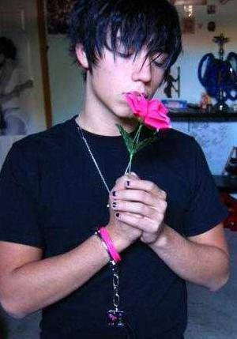

Quejoso
 De: La Frikipedia, la enciclopedia extremadamente seria.
De: La Frikipedia, la enciclopedia extremadamente seria.
 Un EMO es un claro ejemplo de quejoso

Risto es solo quejoso con los demás
Se dice del ser humano que no para de quejarse por molestias, físicas o psicológicas, la mayoría tienen origen ficticio, es decir, son inventadas.
Suelen ser personas cuyo único cometido en su vida es llamar la atención, así pues, los emos serian un gran ejemplo de la palabara "quejoso".
ADVERTENCIA: No confundir quejica con quejoso, ya que seria una mezcla entre quejica y pesado, de ahi el sufijo -oso (no confundir con el mamífero)que denota pesadez incalculable.
Perfil de los quejosos
En su mayoría son seres vivos que se quejan si su equipo ya no gana la liga, por que en invierno hace tanto frío, o por qué las jessis gritan tanto.
Ejemplo de conversación con el quejoso:
- Anónimo: -Disculpe compadre, ¿seria tan amable de indicarme por donde se va al ambulatorio?
- Quejoso: - Ay, no me hables del ambulatorio que el otro día fui y me tuvieron que operar de fimosis.
- Anónimo: -yo solo le he preguntado su localización...
- Quejoso: ¿Por que no llueve? me cago en la puta, es culpa de Zapatero.
- Anónimo: De acuerdo amigo, muchas gracias, ya le pregunto a otra persona.
- Quejoso: ¡Ay, siempre pasais de mi! De tan bueno que soy,
soy parezco tonto.
- Anónimo: Discúlpeme si le hecho sentir mal...
- Quejoso: Si, ya, ahora soy yo el malo, ¿no? Y encima mañana tengo examen... ¡Ei , ¿donde estas? ¡que no te dicho donde esta el ambulatorio! La gente ya no tienen respeto por nada ni por nadie...
Personas que las sufren
- Los emos: Estos suelen marear con temas tipo, no merezco vivir, soy un mierda, la gente
sabe cree que soy muy gay, estoy triste al ver las pobres hojas caer de los árboles, aprovecharé para extender el brazo a ver si con suerte una cae en mi muñeca y me corta las venas...,
- El compi inquieto: Es aquel amigo que te marea con cosas tipo: va, venga, encufa el ordenador que quiero enviarle un mail a Nenita_en_tanga@hotmail.com. Tu le respondes que no te va el pc, y el te empieza a marear con cosas como: cuando te hacian falta los apuntes te lo dejé, no seas mierda, tu se lo vueles a repetir y el sigue con su gilipollez añadiendo: "si fuera Roberto ya se lo hubieras encendido..." El final da lugar a un deja-vu eterno, una especie de espiral viciosa que solo trae una enorme dosis de gilipollez. Al final esta historia termina de dos maneras posibles:
- Os vais a un Cyber
- (la recomendable) Le tiras una pelota de tenis, el la recogerá con la boca y cuando vuelva se le habrá olvidado.
- El jugador en estado me-invento-escusas-para-que-no-se-note-que-no-tengo-ni-puta-idea: es ese que en cualquier juego (Da igual que sea furbol, monopoly, parchís o piedra, papel y tijeras) esta todo el rato quejandose de que te has saltado una norma, que tiró mal el dado por que le dió un calambre en el dedo, que no mete gol por que el balón esta desinflado, no mete canasta por que hay un pájaro que le mira mal...
- Sánchez Dragó: Se queja todo el rato de lo que hacen sus enemigos los rojos y amenaza a sus espectadores con abandonar España si no gana su partido político.
- Ralph Wiggum: Se queja de cosas tan importantes e ilógicas como: "¿Por que el aliento de mi gato huele a comida de gato?"
- Risto Mejide: Este tipo siempre se anda quejando de si los de OT han desafinado, si van vestidas como putas, si jesus Vazquez padece de Diariodepatricitisis, si le llaman hijo de puta, o si tiene cabeza chupachup, de lo que nunca se quejará es de la fama que tiene (mala, pero fama) ¿o si? como es un quejoso, nunca se sabe...
¿Sabias que...
- ... ser quejoso es un
maldición don natural?
- ... 2+2 son cuatro?
- ... los quejosos nunca pararán de marearte hasta que lo tengas entretenido con cualquier gilipollez?
- ... que la dos quintas partes de los machos quejosos sufren de impotencia cuando llegan a los 40 años?
- ... pueden ser muy pesados?
- ... nunca reconocerán su quejosidad a no ser que le des dinero a cambio?
Autor(es):
- El Sevillano
- Lunasfingo
- Karurosu
Frikipedia 2005-2016, Licencia
GFDL 1.2 - Extraído por FrikiLeaks